要望への対応表（最新指示・26項目）
俺がドラゴン。 図鑑キャラ・シナリオ・ボス・雑魚を、今のゲームの数字で。
操作キャラ22体の数値・表示模型の高さと全章のウェーブ数は2026-11-16 18:24（日本時間）の計測・確認です。敵の数・敵個体の数値は同日13:52の計測記録です。
1 数字で見る
前に作った企画書（応募の図鑑）の数字を、今のゲームで数え直しました。
22遊べるキャラ
10シナリオ
33章
108ウェーブ
127敵の種類
59ボス
3164全ウェーブで出る敵の数
3173Dモデル
いちばん大きい敵は「管理者」で、高さ約136m。企画書のときは キャラ22体・既存シナリオ9本・ボス45体・雑魚77種でした。今は第10シナリオ「妖精の国編」が加わっています。
2 遊べるキャラ（22体）
体力・攻撃の数字は、ゲームの中の値そのままです。「弾」はふつうの攻撃、「近接」は近くの敵への攻撃の1発の強さ。 必殺技は標準装備です。入れかえ札を選ぶと装備中の技が変わります。
空も飛べる、バランス型。炎の息と大火球で、まとめて焼きはらう。
体力 速さ 攻撃
体力 260・弾 38・近接 40・速さ 50
見た目の高さ（ゲーム内単位） 通常形態 8.48
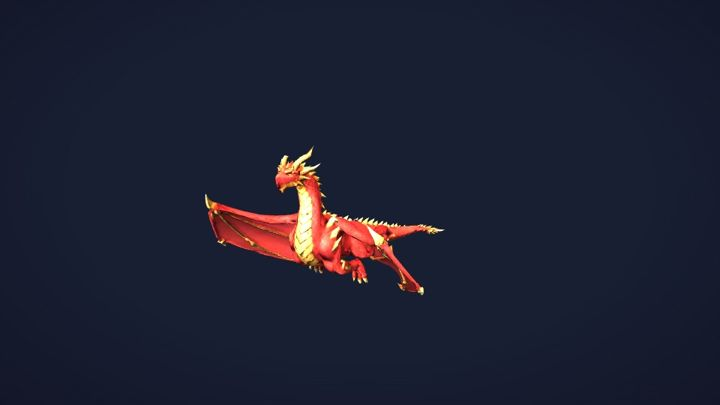
現在のゲームの模型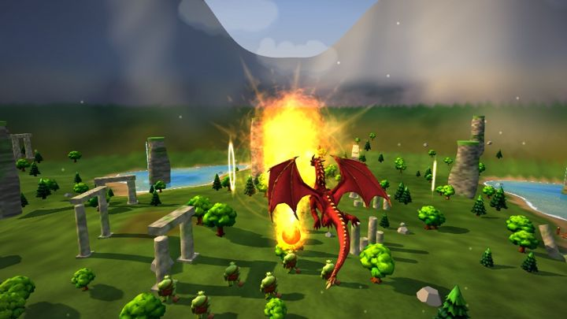
大火球を発動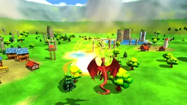
必殺技① 大火球
大きな火の玉。当たると広く爆発

必殺技② 炎の渦
自分のまわりに炎の渦。近くを焼く
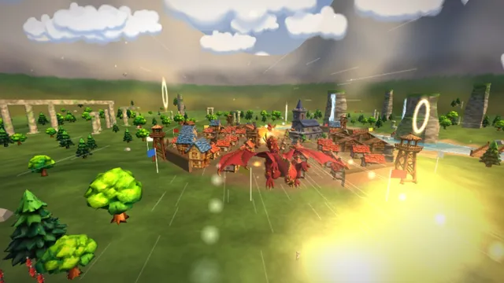
スペース 突進
前へ体当たり。ふれた敵にダメージ
上級技：大火球 → 業火球 → 滅びの業火 ／ 炎の渦 → 炎の大渦 → 紅蓮の嵐
いちばん速く、よく曲がる。雷の息を連射し、必殺技は前の敵6体に落雷。体力は少なめ。
体力 速さ 攻撃
体力 170・弾 31・近接 30・速さ 60
見た目の高さ（ゲーム内単位） 通常形態 7.03
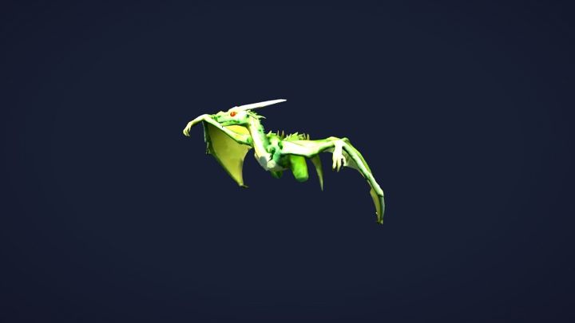
現在のゲームの模型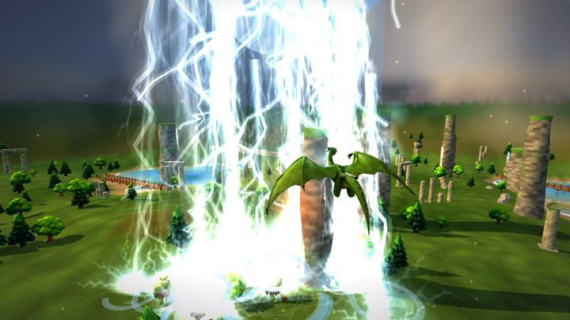
落雷を発動
必殺技① 落雷
前の敵6体に雷を落とす
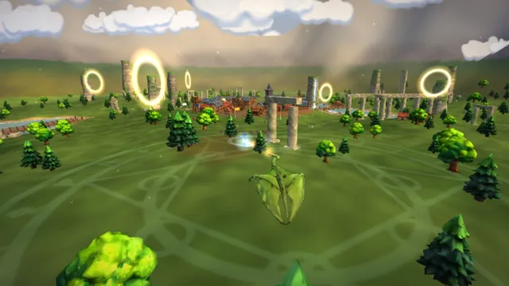
必殺技② 放電
自分のまわりの敵に電撃
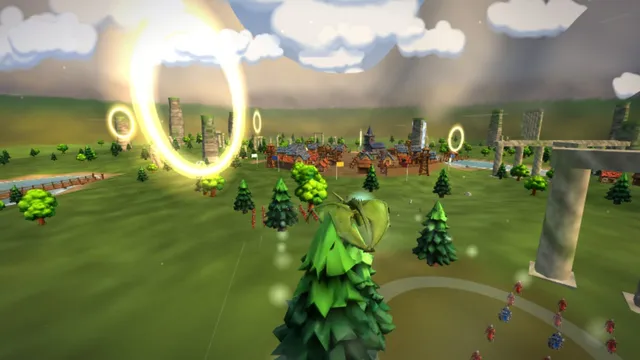
スペース 緊急回避
横へすばやくよける
上級技：落雷 → 大落雷 → 神鳴り ／ 放電 → 大放電 → 雷帝の怒り
地中を進んで敵の足元へ噴出。岩投げで溶岩の姿になり、通った場所を燃やす。
体力 速さ 攻撃
体力 460・弾 70・近接 60・速さ 27
見た目の高さ（ゲーム内単位） 通常形態 8.86
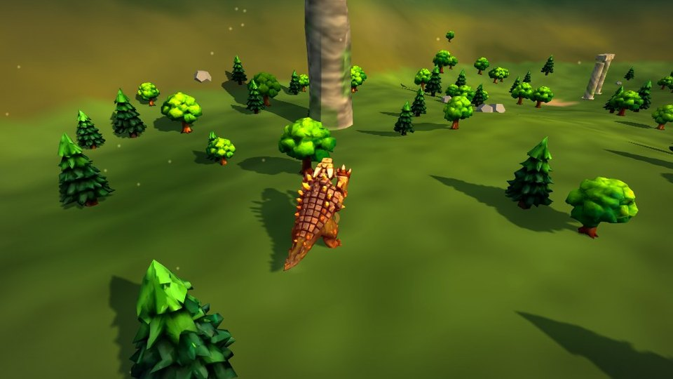
敵の足元へ潜って飛び出す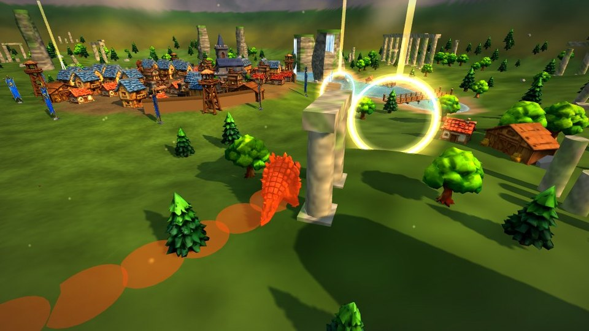
溶岩の姿になり足跡を燃やす安全に出られる場所がないときは地響きになる。溶岩の姿は10秒間。
地上では剣と光。屋外の金リングで小型天馬に30秒乗り、金と青の剣気を飛ばす。時間切れには安全な陸へ着地する。
体力 速さ 攻撃
体力 340・弾 38・近接 50・速さ 20
見た目の高さ（ゲーム内単位） 通常形態 2.10 ・ 天馬騎乗形態 3.55
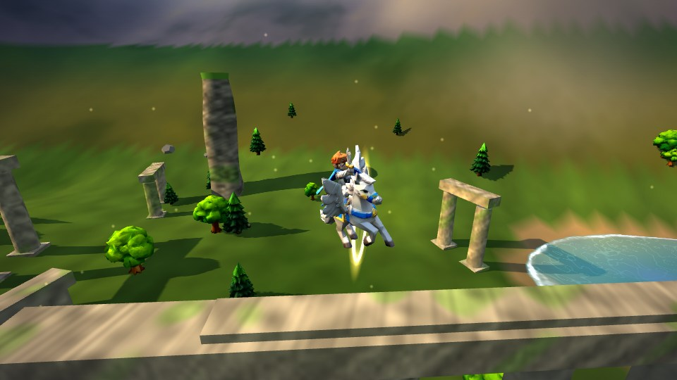
小さくした骨付き天馬で飛行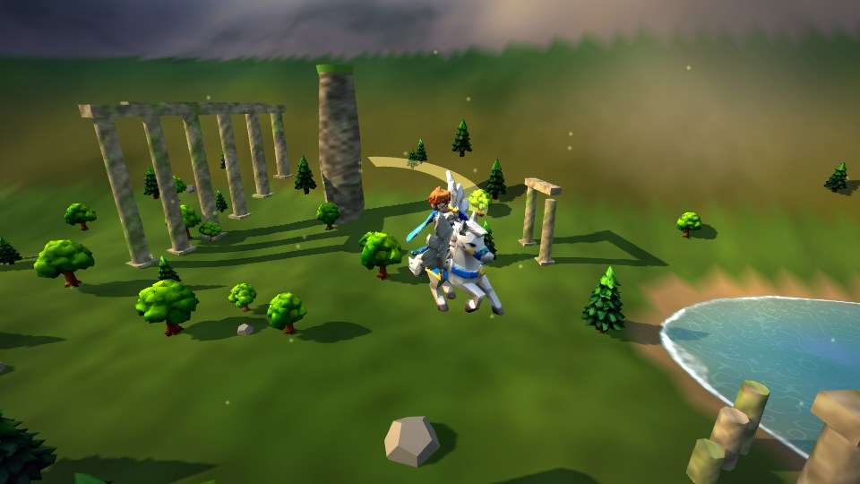
天馬の上で剣を振るう仲間レベルアップのレア札で加わる（最大3枠）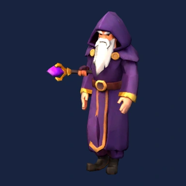
魔法使い- 僧侶
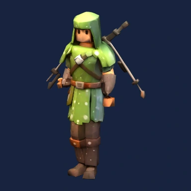
弓兵
上級技：光の柱 → 聖なる光柱 → 天の裁き ／ 回転斬り → 旋風斬り → 竜巻斬り
兵隊15人と大砲4門の部隊を動かす。弓と槍で一斉に攻め、近くは槍でつく。必殺技は大砲の一斉砲撃。体力が減ると人数が減る。
体力 速さ 攻撃
体力 380・弾 38・近接 32・速さ 14
見た目の高さ（ゲーム内単位） 通常形態 2.46
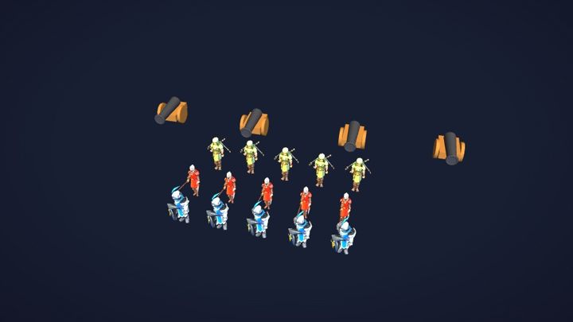
防御で盾兵・槍兵・弓兵が密集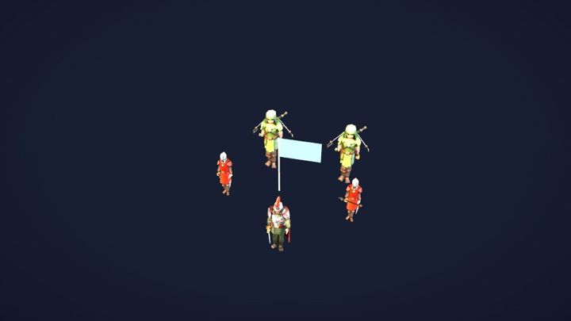
援軍1部隊は5人・最大3部隊仲間レベルアップのレア札で加わる（最大3部隊）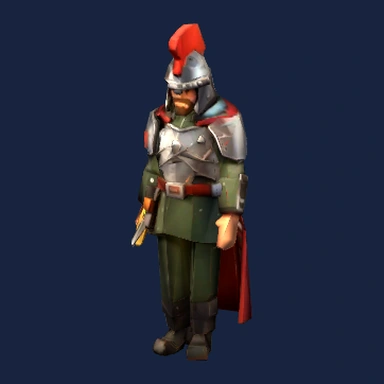
隊長1人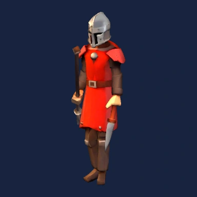
槍兵2人- 弓兵2人
上級技：一斉砲撃 → 全軍砲撃 → 王国の総力 ／ 矢の雨 → 矢の嵐 → 万の矢
近い敵や岩をつかんで投げる。敵や建物から岩を吸収して最大2倍に成長し、被弾で岩が剥がれる。岩弾と対空投石も使う。
体力 速さ 攻撃
体力 520・岩弾85／対空70・近接 115・速さ 15（成長前）
見た目の高さ（ゲーム内単位） 通常形態 4.56
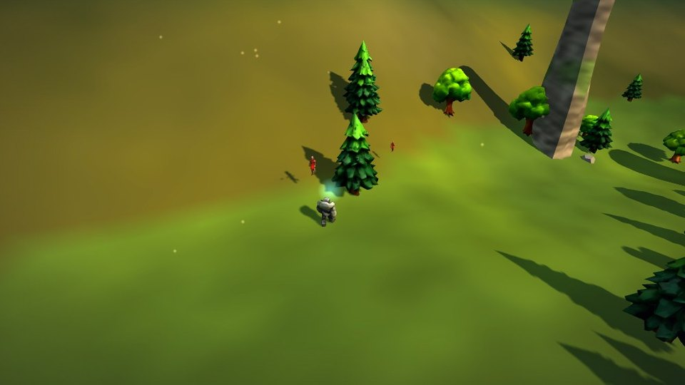
近くの敵を持ち上げて投げる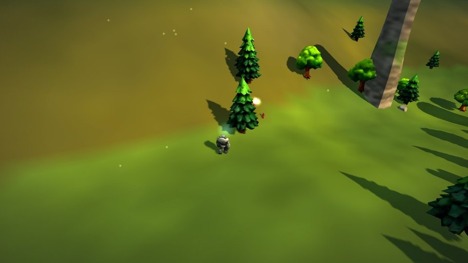
投げた敵を別の敵へぶつける仲間レベルアップのレア札で加わる（最大3枠） 小さな岩人形
小さな岩人形
上級技：破壊光線 → 超破壊光線 → 滅びの光
人型は近くの敵を大槌で打つ。必殺技は周りを払う横なぎと、前方へのたたき割り。金のリングをくぐると30秒だけ戦車に乗り、小砲弾を撃つ。戦車の必殺技は大砲3連発と、とげの突撃。
体力 速さ 攻撃
体力 460・弾なし・近接 80・速さ 19（徒歩）
見た目の高さ（ゲーム内単位） 通常形態 3.90 ・ 戦車 12.10
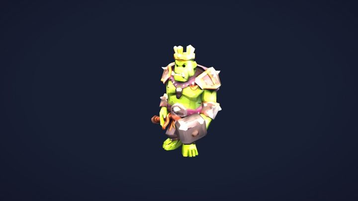
現在のゲームの模型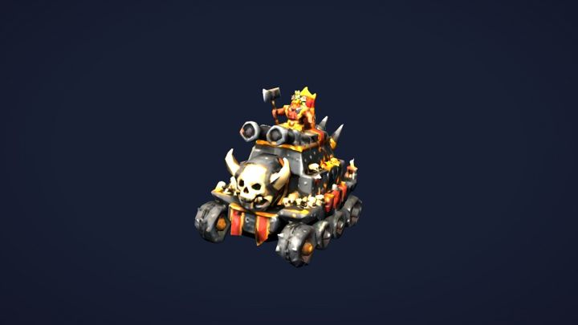
戦車へリング変身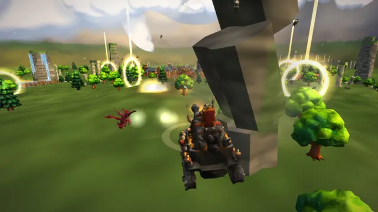
必殺技① 大槌の横なぎ
大槌を一周振り、周りの敵を打ち払う
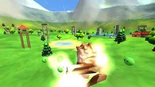
必殺技② 大槌のたたき割り
大槌を地面にたたきつけ、前の敵を直線で巻きこむ
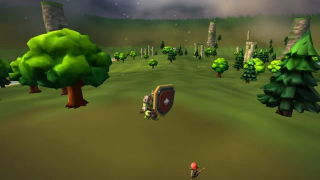
スペース 身を守る
その場でかたまり、受けるダメージを8割へらす
仲間レベルアップのレア札で加わる（最大3枠） オーク将軍
オーク将軍
上級技：大槌の横なぎ → 大槌の連続横なぎ → 大槌の三連横なぎ ／ 大槌のたたき割り → 大槌の連続たたき割り → 大槌の三連たたき割り
爆撃に合わせ、陸に地上兵を最大6人降ろす。建物4棟ごとに砲門を増設し、最大4門。レア札で5隻の船団を追加。
体力 速さ 攻撃
体力 300・弾 48・近接 36・速さ 42
見た目の高さ（ゲーム内単位） 通常形態 19.00
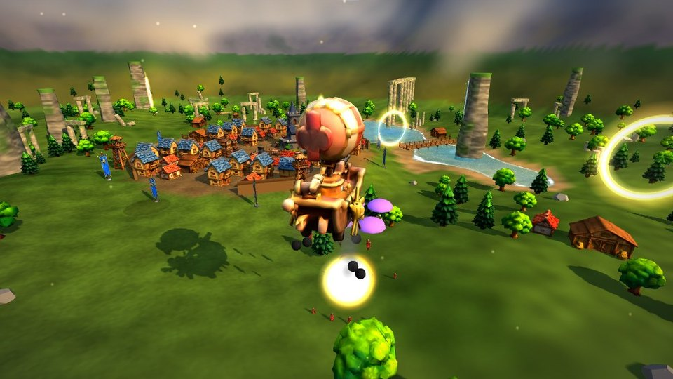
6人の兵士がパラシュートで降下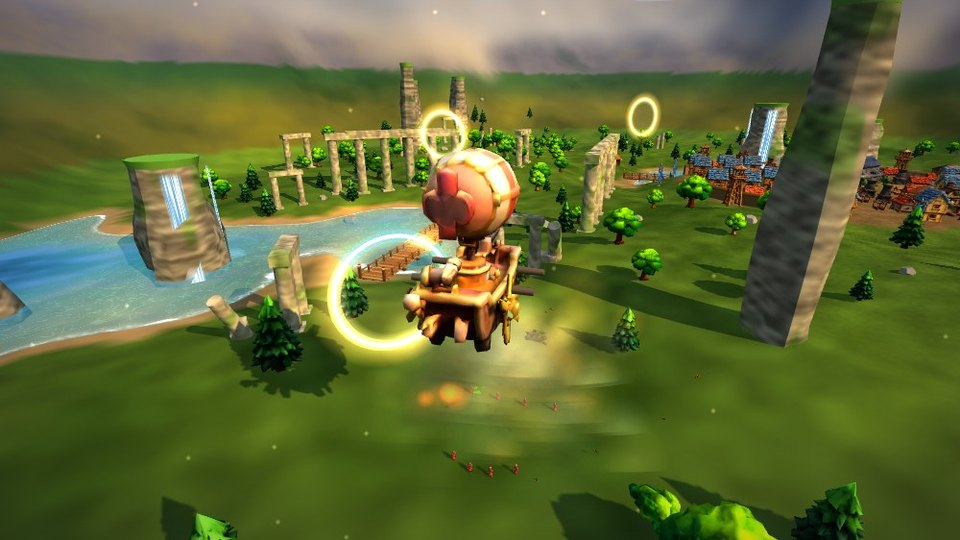
建物破壊で増やした砲門から斉射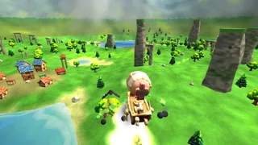
必殺技① 爆撃・兵員降下
爆弾を落とし、陸へ地上兵を最大6人降ろす。
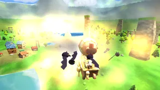
必殺技② 全砲門斉射
建物破壊で増設した砲門も斉射に参加。
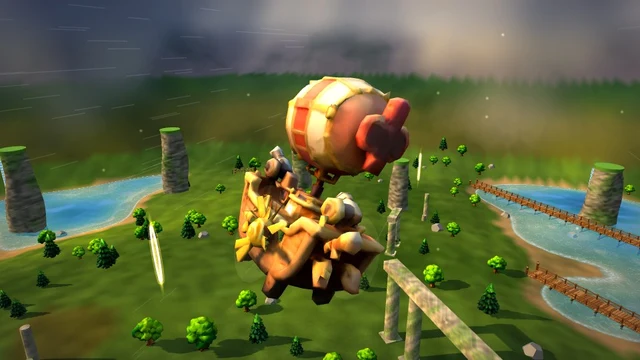
スペース 回避・急旋回
高さをすばやくかえて、弾をかわす
砲門は出撃中の建物破壊で最大4門増設。降下兵は陸に着いてから戦う。
徒歩では弓とナイフ。レア札で同じレッドキャップが最大3人。屋外の金リングで鷹に30秒乗り、仲間も同じ必殺に参加。
体力 速さ 攻撃
体力 150・弾 22・近接 28・速さ 30
見た目の高さ（ゲーム内単位） 通常形態 1.07 ・ 鷹騎乗形態 2.18
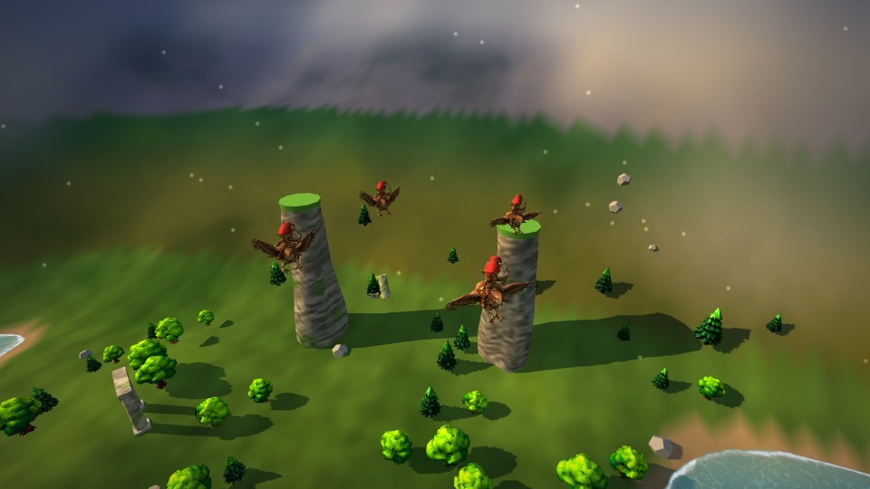
新しい鷹に乗り、仲間と飛行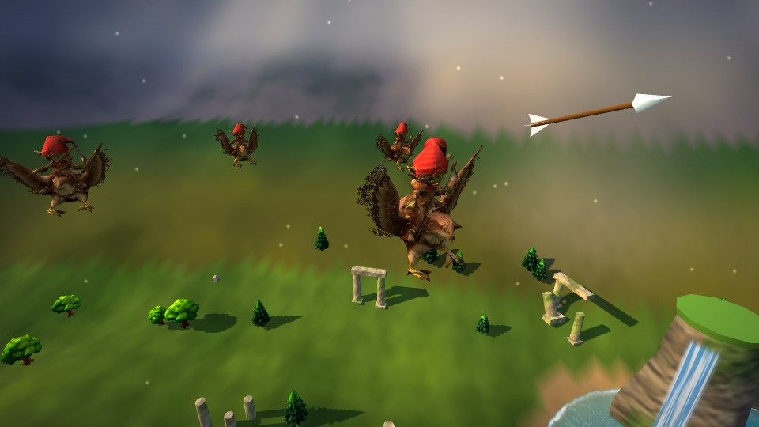
騎乗した仲間も一緒に必殺技を放つ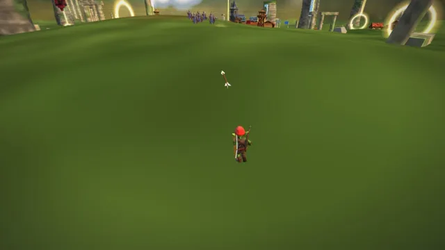
必殺技① 矢の雨
矢を降らせる。鷹に乗ると仲間も一緒に矢を放つ。
必殺技② 影走り
少しの間すごく速く走り、通った敵を斬る。鷹に乗ると仲間も一緒に斬る。
スペース ジャンプ／騎乗中は回避
徒歩ではジャンプと空中の前転。騎乗中は横へよけ、素早く反転する。
仲間レベルアップのレア札で加わる（最大3枠） レッドキャップ
レッドキャップ
八本の触手で周囲の通常敵を最大8体同時に拘束する。大うずで墨を広げ、飛び込む敵弾をそらす。
体力 速さ 攻撃
体力 620・弾 30・近接 55・速さ 9
見た目の高さ（ゲーム内単位） 通常形態 9.47
墨で敵の弾をそらす8本の触手で同時につかむ
四枚の翼で空を飛ぶ大天使。光の矢を放ち、光の巨人を6秒間呼び出して周囲の敵を打ち払う。もうひとつの必殺技は、天から降りそそぐ光の柱。
体力 速さ 攻撃
体力 300・弾 42・近接 65・速さ 43
見た目の高さ（ゲーム内単位） 通常形態 7.94
現在のゲームの模型光の巨人召喚を発動
上級技：光の柱 → 聖なる光柱 → 天の裁き
小さな飛竜に乗る8騎の弓騎士。小さな炎と矢を交互に連射する。必殺技は全騎の小火炎連射と、矢の連続斉射。体力が減ると騎数も減る。
体力 速さ 攻撃
体力 360・小火炎11／矢6・近接なし・速さ 40
見た目の高さ（ゲーム内単位） 通常形態 2.18
現在のゲームの模型援軍1編隊は5騎・最大3編隊
必殺技① 小火炎一斉射撃
全騎が小さな炎を3回に分けて撃ちこむ
必殺技② 竜騎士の矢嵐
騎士たちが4回の斉射で、多数の矢を前方へ放つ
スペース 回避・急旋回
高さを保って横によけながら後ろを向く。左右の入力でよける方向を選べる
上級技：小火炎一斉射撃 → 小火炎の連続斉射 → 全騎・火炎連射 ／ 竜騎士の矢嵐 → 竜騎士の連続矢嵐 → 全騎・百矢斉射
通常は浸水と魚人招集。金リングで30秒超大型化し、通常攻撃と両必殺が槍の打撃に変わる。レア札は大型魚人。
体力 速さ 攻撃
体力 480・弾 45・近接 85・速さ 22
見た目の高さ（ゲーム内単位） 通常形態 6.77 ・ 超大型の海王 36.00
魚人の兵8体を呼び出す超大型の姿で槍を振るう
必殺技① 海流砲・魚人招集
通常は魚人最大8体。超大型では大槍の叩き割り。
必殺技② 戦場を浸す大津波
通常は15秒浸水。超大型では大槍の一回転。
スペース 海の守り
水の守りで、受けるダメージをへらす
細い機銃弾を連射。飛行の軌跡へ爆弾を落とし、急降下で大型爆弾を一発だけ投下する。
体力 速さ 攻撃
体力 320・弾 12・近接 40・速さ 46
見た目の高さ（ゲーム内単位） 通常形態 6.00
飛行の軌跡に続けて爆弾を投下急降下で大型爆弾を一発落とす
必殺技① じゅうたん爆撃
飛行の軌跡に沿って最大10発を落とす。
必殺技② 急降下爆撃
大型爆弾を準備。6秒以内に急降下すると一発落とす。
スペース 回避・急旋回
高さを保って横によけながら後ろを向く。左右の入力でよける方向を選べる
大型爆弾は1発。間に合わなければ6秒で準備が解除される。
近くの普通の敵を最大6体、22秒間味方にする。リングで牛、黒い煙の魔人に変身すると転向兵の姿も変わる。
体力 速さ 攻撃
体力 430・弾 46・近接 90・速さ 17
見た目の高さ（ゲーム内単位） 通常形態 3.16 ・ 牛の魔物 5.57 ・ 黒い煙の魔人 11.76
通常敵を味方へ引き込む寝返った仲間が援護する
上級技：破壊光線 → 超破壊光線 → 滅びの光
地面まで降りるか、屋外の金のリングをくぐって着陸すると大型ロボに変形。地上では細いレーザー弾で一斉射撃し、近くの敵はレーザーブレードで斬る。空中のスペース／操作ボタンはバリア。地上では同じボタンで離陸して円盤に戻る。
体力 速さ 攻撃
体力 370・弾 34・近接 70・速さ 43
見た目の高さ（ゲーム内単位） 通常形態 4.00 ・ ロボット形態（着陸） 9.11
円盤の回転レーザー掃射大型ロボのレーザーブレード
必殺技① レーザー乱れ撃ち
前方の敵をねらい、左右から短いレーザー弾を撃つ
必殺技② 回転レーザー掃射
反対向きの2本のレーザーで一周し、まわりの敵を切り刻む
スペース バリア
2秒間、敵から受けるダメージを80％減らす
上級技：破壊光線 → 超破壊光線 → 滅びの光全砲門斉射 → 乱れ撃ち → 空の要塞
魔法の弾と雷、光線で戦う魔法使い。金のリングをくぐると30秒間、巨大な魔術師に変身し、杖と魔法の弾が強くなる。時間切れで元の姿へ戻る。変身中のリングで残り30秒に戻せる。
体力 速さ 攻撃
体力 360・弾 40・近接 55・速さ 23
見た目の高さ（ゲーム内単位） 通常形態 2.05 ・ 巨大魔術師 13.33
現在のゲームの模型巨大魔術師へリング変身
上級技：落雷 → 大落雷 → 神鳴り破壊光線 → 超破壊光線 → 滅びの光
小さな立方体の群れで戦う。金のリングで人型に60秒合体。合体中にもう1個くぐると竜型に30秒合体する。時間切れで立方体の群れに戻る。
体力 速さ 攻撃
体力 480・弾 36・近接 60・速さ 24
見た目の高さ（ゲーム内単位） 通常形態 5.24 ・ 人型 10.41 ・ 竜型 8.12
現在のゲームの模型竜型へリング変身
仲間レベルアップのレア札で加わる（最大3枠）- 小さな岩人形
上級技：地割れ → 大地割り → 奈落割り ／ 破壊光線 → 超破壊光線 → 滅びの光
弱った小型の敵を食べて回復・成長。被弾で縮み、小さなスライムが増える。レア札は青い海スライム。
体力 速さ 攻撃
体力 500・弾 42・近接 85・速さ 23
見た目の高さ（ゲーム内単位） 通常形態 7.00
敵を引き寄せて捕食する分身を同時に突撃させる

必殺技① 捕食
小型の通常敵を引き寄せて食べ、回復・成長。
必殺技② 分身一斉突撃
分身を6〜10匹にそろえ、同時に突撃させる。

スペース ぷるぷる突進
前へ体当たりして、ふれた敵を吹きとばす
- 手下：被弾で現れる分身（最大10匹）。必殺技②で一斉に突撃。
捕食できるのは小型の通常敵。最大HP110以下か、残りHP45％以下の敵が対象。
金リングで30秒、巨大な飛ぶ竜へ。大火球に合わせて、仲間の竜すべてがその場から一斉に炎を放つ。
体力 速さ 攻撃
体力 500・弾 44・近接 80・速さ 23
見た目の高さ（ゲーム内単位） 通常形態 3.37 ・ 巨大な竜 26.00
家来の竜が同時に炎を放つ竜の仲間と戦う
必殺技① 竜の一斉炎
大火球と同時に仲間の竜が炎を放つ。
必殺技② 炎の渦
まわりへ炎を広げ、近くの敵を焼きはらう

スペース 竜王の守り
守りをかため、受けるダメージをへらす
上級技：炎の渦 → 炎の大渦 → 紅蓮の嵐
紫の魂の弾で戦い、倒した通常敵を同じ姿の味方にして最大8体を使役。必殺技「死者の軍勢」は骸骨兵を呼ぶ。
体力 速さ 攻撃
体力 280・弾 38・近接 45・速さ 20
見た目の高さ（ゲーム内単位） 通常形態 3.87
現在のゲームの模型死者の軍勢を発動
必殺技① 死者の軍勢
骸骨兵を8体、一度に呼び出す。古い兵から入れかわる
必殺技② 光の柱
近くの敵へ、空から魔法の光の柱を落とす
スペース 闇の守り
闇をまとい、受けるダメージをへらす
- 手下：倒した通常敵が同じ姿で復活（最大8体・22秒）
上級技：光の柱 → 聖なる光柱 → 天の裁き
空に浮かび、小妖怪を水平に回して射撃。大型の徒歩妖怪に変えるか、一斉に突撃させる。大小で最大8体。
体力 速さ 攻撃
体力 290・小妖怪の弾17・本体近接なし・速さ 29
見た目の高さ（ゲーム内単位） 通常形態 4.30
小妖怪を大型の徒歩妖怪へ変える空中の小妖怪を一斉に突撃させる
必殺技① 大型妖怪へ変化
小妖怪を最大4体、大型の徒歩妖怪に変える。
必殺技② 雑魚妖怪の一斉突撃
小妖怪だけを一斉に敵へ突撃させる。

スペース 小妖怪を呼ぶ
小妖怪を2体補充する。大小合わせ最大8体。
- 手下：空中を回って射撃する小妖怪と地上を歩く大型妖怪（合計8体まで）
大型化は最大4体で28秒間。移動技で小妖怪を補充できる。
3 シナリオ（10本）
各シナリオの章と、全ウェーブで出てくる敵の数です。

1地下の迷宮
前世は人間。女神の罰で竜に生まれ変わった主人公が、ねぐらの地下に広がる迷宮を下り、封印の扉の奥の魔王を目指す。
章 4・敵の種類 16・出てくる敵 89体
第1章 竜の谷第2章 石の広間第3章 巨人の間最終章 魔王の間
- 第1章 目覚め竜の谷・ウェーブ4・敵45体
- 第2章 地下の迷宮石の広間・ウェーブ3・敵40体
- 第3章 ゴーレム決戦巨人の間・ウェーブ1・敵3体
- 最終章 封印の扉魔王の間・ウェーブ2・敵1体
ボス：人間の勇者、岩の巨人ゴーレム、オークキングの戦車、よろいの竜人、魔王（半身封印）
2王国編
人間の王国との戦い。国境の町から王都へ攻めこみ、嵐の海へ逃げる王の艦隊を追う。兵と兵器の軍勢が相手だ。
章 3・敵の種類 15・出てくる敵 358体
第1章 国境の町第2章 王都最終章 嵐の海
- 第1章 炎の夜明け国境の町・ウェーブ4・敵136体
- 第2章 王の城王都・ウェーブ5・敵147体
- 最終章 王の艦隊嵐の海・ウェーブ4・敵75体
ボス：宮廷魔術師、石の巨人、超大型大砲車「竜ごろし」、人間の勇者、うごく城、巨大戦艦、空中戦艦
3オークキング編
森にあふれた、オークとゴブリンの大軍。犬や鷹に乗るゴブリン、木の巨大な砦、攻城兵器をこえて、オークキングを討つ。
章 3・敵の種類 9・出てくる敵 319体
第1章 オークの森第2章 牙の砦最終章 牙の王座
- 第1章 緑の軍勢オークの森・ウェーブ3・敵130体
- 第2章 木の巨大砦牙の砦・ウェーブ3・敵111体
- 最終章 オークキング牙の王座・ウェーブ3・敵78体
ボス：トロール、レッドキャップ、木造の竜、木の巨大戦車
4魔王討伐編
魔界の門をやぶり、骨の荒野をこえて、魔王の城へ乗りこむ。悪魔と骸骨の軍団、骨の巨人、番犬ケルベロスが待つ。
章 3・敵の種類 14・出てくる敵 316体
第1章 魔界の門第2章 骨の荒野最終章 魔王の城
- 第1章 門をやぶれ魔界の門・ウェーブ4・敵158体
- 第2章 骨が起きる骨の荒野・ウェーブ4・敵109体
- 最終章 魔王討伐魔王の城・ウェーブ4・敵49体
ボス：トロール、骨の巨人王、地獄の番犬ケルベロス、黒い騎士、魔王
戦いの仕掛け（ネタバレ）
- 魔王の城 斜路で4階を登る。ケルベロス、黒い騎士、巨兵、魔王の順。3枚の鉄格子は各波の全滅で開き、罠は輪の約0.92秒後。
- 魔王の城 封印柱は4本（体力は通常130・初心者80）。1本ごとに魔王の攻撃が基礎値から10％下がり、受けるダメージ倍率は0.125上がる。
5竜王編
空の強者をめぐる戦い。嵐の頂のブラックドラゴンと古の竜、竜の墓場の竜たち、そして山より大きい竜王。
章 3・敵の種類 8・出てくる敵 129体
第1章 嵐の頂第2章 ねむる竜の谷最終章 黒き玉座
- 第1章 空の王嵐の頂・ウェーブ2・敵4体
- 第2章 竜の墓場ねむる竜の谷・ウェーブ4・敵77体
- 最終章 竜王黒き玉座・ウェーブ3・敵48体
ボス：赤い竜、ブラックドラゴン、古の竜、墓守の竜、竜王（人の姿）
戦いの仕掛け（ネタバレ）
- 嵐の頂 足元や進行方向に輪が現れ、約1.22秒後に落雷。輪の外へ移動すると避けられる。
- 竜の墓場 対象の竜を倒した地面から約0.8秒で骨竜が起きる。各波で通常3体・初心者2体まで。骨竜は一度で倒せる。
6天使編
雲の上からおりてきた、天の軍勢との戦い。雲の門、天空の神殿と空中砦をこえて、四枚の翼の大天使と決着をつける。
章 3・敵の種類 9・出てくる敵 400体
第1章 雲の門第2章 天空の神殿最終章 光の間
- 第1章 雲の上へ雲の門・ウェーブ3・敵144体
- 第2章 神殿をせめろ天空の神殿・ウェーブ3・敵128体
- 最終章 天の決戦光の間・ウェーブ3・敵128体
ボス：守護天使長、グリフォン、大天使
戦いの仕掛け（ネタバレ）
- 雲の門 大小5つの浮島を渡る。地上キャラは金線の歩道を歩ける。飛ぶキャラは島の間を飛び越えられる。
- 天空の神殿 天使将軍の波に聖歌隊が最大4体。金色の輪が目印。最後の歌い手を倒すと将軍に攻撃が通る。
7海王編
海の主・海王の軍勢との戦い。さんごの海、うずの海をこえて、嵐の中の海王にいどむ。
章 3・敵の種類 12・出てくる敵 380体
第1章 さんごの海第2章 深い海のうず最終章 海王の宮殿の真上
- 第1章 さんごの海さんごの海・ウェーブ3・敵132体
- 第2章 うずの海深い海のうず・ウェーブ3・敵113体
- 最終章 海王海王の宮殿の真上・ウェーブ3・敵135体
ボス：海蛇、トロール、海の大スライム、クラーケン

8並行世界編
女神に「管轄の外」へ飛ばされた主人公が、次元のさけ目を落ちて、5つの世界をわたる。鉄と煙の戦場、ネオンの機械の都、恐竜の密林、土偶の超文明都市、そして面と線だけの4次元の世界。最後に待つのは、すべての世界の「管理者」。
章 5・敵の種類 44・出てくる敵 632体
第1章 灰色の戦線第2章 眠らない都第3章 牙の森第4章 まほろばの空都最終章 管理者の間
- 第1章 鉄と煙の世界灰色の戦線・ウェーブ4・敵115体
- 第2章 ネオンの都眠らない都・ウェーブ4・敵120体
- 第3章 太古の密林牙の森・ウェーブ3・敵121体
- 第4章 土偶の超文明まほろばの空都・ウェーブ3・敵174体
- 最終章 四次元の格子管理者の間・ウェーブ8・敵102体
ボス：大型爆撃機、超重戦車「陸の戦艦」、装甲列車「鉄のムカデ」、重装ロボ隊長、都市統括機、巨大UFO、三本角の長、暴君竜、大マンモス、神輿の砦、太陽の王、土偶の神（40m）、合体獣キューブ、管理者
戦いの仕掛け（ネタバレ）
- 並行世界編 鉄と煙の世界は予告砲撃、ネオンの都は弾が1回反射、太古の密林は重力0.42倍、土偶の都は陣内の攻撃1.25倍。
- 並行世界編 四次元の最終章で合体獣の後、超重戦車、都市統括機、暴君竜、太陽の王、管理者と順番に戦う。
9ぬらりひょん編
章 3・敵の種類 32・出てくる敵 454体
- 第1章 百鬼夜行妖怪の城下町・ウェーブ3・敵187体
- 第2章 からくり城からくりの城・ウェーブ3・敵143体
- 最終章 ぬらりひょん月見の天守・ウェーブ3・敵124体
ボス：火をふく大ガマ、火の車の大妖怪、大ムカデ、侍の鎧の巨兵、九尾の狐、がしゃどくろ、土蜘蛛、ガマの親分、ぬらりひょん
戦いの仕掛け（ネタバレ）
- 妖怪の城下町 提灯からの火は約1.2秒で近い提灯や木造小屋へ移る。火は最大6か所、各約5.5秒で消える。
- 妖怪の城下町 第1波の鬼が通りを横断。渡り切る前に止めた数だけ第2波の援軍が減る。通常5体・初心者3体まで。
10妖精の国編
花灯りが消えた妖精の国へ。森と鏡の湖を渡り、花冠の宮殿で女王と対決。花に近づいて灯りを取り戻し、ボスの守りを崩そう。
章 3・敵の種類 6・出てくる敵 87体
第1章 花明かりの森第2章 鏡の湖最終章 花冠の宮殿
- 第1章 消えた花灯り花明かりの森・ウェーブ2・敵29体
- 第2章 鏡の向こうの水刃鏡の湖・ウェーブ2・敵26体
- 最終章 花冠の盾花冠の宮殿・ウェーブ2・敵32体
ボス：森の番人、鏡湖の精霊、妖精の女王
4 ボス図鑑（59体）
体力は「ふつう」の難しさでの値。攻撃は1回あたりの強さ、大きさは見た目の高さ（m）です。
1 地下の迷宮
人間の勇者体力 310・攻撃 13・高さ 約3m

よろいの竜人体力 558・攻撃 20・高さ 約8m

魔王（半身封印）体力 744・攻撃 15・高さ 約31m・空を飛ぶ
オークキングの戦車体力 1488・攻撃 26・高さ 約26m
岩の巨人ゴーレム体力 1500・攻撃 24・高さ 約29m
2 王国編
宮廷魔術師体力 620・攻撃 0・高さ 約3m・空を飛ぶ
石の巨人体力 620・攻撃 24・高さ 約22m
人間の勇者体力 620・攻撃 26・高さ 約3m
空中戦艦体力 1364・攻撃 20・高さ 約47m・空を飛ぶ
巨大戦艦体力 1736・攻撃 0・高さ 約23m
- ❔
超大型大砲車「竜ごろし」体力 1860・攻撃 26・高さ 約9m
うごく城体力 2418・攻撃 30・高さ 約60m
3 オークキング編
レッドキャップ体力 186・攻撃 14・高さ 約5m
木造の竜体力 930・攻撃 24・高さ 約11m
木の巨大戦車体力 1054・攻撃 22・高さ 約24m
トロール体力 2356・攻撃 26・高さ 約15m
4 魔王討伐編
トロール体力 1350・攻撃 18.2・高さ 約10m
- ❔
黒い騎士体力 1984・攻撃 30・高さ 約5m
地獄の番犬ケルベロス体力 2356・攻撃 22・高さ 約14m
魔王体力 2530・攻撃 15・高さ 約18m・空を飛ぶ
- ❔
骨の巨人王体力 2925・攻撃 28.8・高さ 約44m
5 竜王編
ブラックドラゴン体力 992・攻撃 32・高さ 約13m・空を飛ぶ
- ❔
赤い竜体力 1496・攻撃 20・高さ 約14m・空を飛ぶ
竜王（人の姿）体力 1800・攻撃 0・高さ 約3m・空を飛ぶ
古の竜体力 1984・攻撃 36・高さ 約60m・空を飛ぶ
- ❔
墓守の竜体力 3348・攻撃 24・高さ 約116m・空を飛ぶ
6 天使編
グリフォン体力 1159・攻撃 20・高さ 約9m・空を飛ぶ

守護天使長体力 2083・攻撃 24・高さ 約12m
大天使体力 2945・攻撃 30・高さ 約10m・空を飛ぶ
7 海王編
クラーケン体力 1488・攻撃 20・高さ 約23m

海の大スライム体力 1860・攻撃 16.8・高さ 約19m
トロール体力 2976・攻撃 23.4・高さ 約34m
海蛇体力 3100・攻撃 24・高さ 約30m
8 並行世界編
大型爆撃機体力 1562・攻撃 16・高さ 約15m・空を飛ぶ
三本角の長体力 1674・攻撃 22・高さ 約6m
重装ロボ隊長体力 1686・攻撃 22・高さ 約11m
超重戦車「陸の戦艦」体力 2728・攻撃 26・高さ 約7m
都市統括機体力 2728・攻撃 26・高さ 約38m
暴君竜体力 2728・攻撃 28・高さ 約14m
装甲列車「鉄のムカデ」体力 2852・攻撃 24・高さ 約7m
神輿の砦体力 3150・攻撃 24・高さ 約16m
巨大UFO体力 3224・攻撃 20・高さ 約6m・空を飛ぶ
太陽の王体力 3472・攻撃 26・高さ 約10m・空を飛ぶ
管理者体力 3472・攻撃 28・高さ 約136m・空を飛ぶ
土偶の神（40m）体力 3900・攻撃 28・高さ 約34m
合体獣キューブ体力 4030・攻撃 24・高さ 約26m
大マンモス体力 7068・攻撃 24・高さ 約19m
9 ぬらりひょん編
大ムカデ体力 1350・攻撃 22・高さ 約5m
土蜘蛛体力 1500・攻撃 22・高さ 約9m
ガマの親分体力 1650・攻撃 22・高さ 約8m
九尾の狐体力 2400・攻撃 22・高さ 約14m
がしゃどくろ体力 2700・攻撃 26・高さ 約40m
侍の鎧の巨兵体力 2728・攻撃 26・高さ 約29m
ぬらりひょん体力 3844・攻撃 26・高さ 約14m・空を飛ぶ
火の車の大妖怪体力 4050・攻撃 22・高さ 約44m
火をふく大ガマ体力 6750・攻撃 22・高さ 約32m
10 妖精の国編
森の番人体力 1395・攻撃 19・高さ 約21m
鏡湖の精霊体力 1736・攻撃 14・高さ 約23m・空を飛ぶ
妖精の女王体力 2604・攻撃 15・高さ 約23m・空を飛ぶ
5 雑魚図鑑（106種）
シナリオごとの手下。「×」は全ウェーブで出てくるおおよその数です。
1 地下の迷宮
コウモリ体力 17・攻撃 5・約2.4m・×22
スライム体力 23・攻撃 6・約3.8m・×20
ゴブリン体力 26・攻撃 7・約3.0m・×14
骸骨兵体力 60・攻撃 8・約5.2m・×12
レッドキャップ体力 30・攻撃 7・約4.1m・×5
岩のゴーレム体力 450・攻撃 18・約9.4m・×4
オークの小型戦車体力 420・攻撃 16・約13.0m・×2
槍の兵体力 150・攻撃 8・約3.3m・×1
僧侶体力 90・攻撃 0・約2.7m・×1
海の大スライム体力 315・攻撃 14・約15.3m・×1
トロール体力 150・攻撃 14・約10.4m・×1
2 王国編
槍の兵体力 273・攻撃 8・約3.6m・×155
飛ぶ騎士体力 120・攻撃 16・約5.4m・×45
弓兵体力 15・攻撃 0・約2.6m・×40
大砲体力 122・攻撃 0・約6.1m・×25
飛空艇体力 225・攻撃 10・約18.8m・×21
帆船体力 195・攻撃 0・約18.4m・×19
僧侶体力 34・攻撃 0・約3.3m・×8
大型大砲体力 525・攻撃 0・約7.0m・×6
3 オークキング編
ゴブリン体力 300・攻撃 15・約7.0m・×200
グリフォン体力 83・攻撃 10・約9.3m・×42
弓兵体力 34・攻撃 11・約3.6m・×41
大砲体力 315・攻撃 0・約5.3m・×15
オークの小型戦車体力 420・攻撃 16・約10.4m・×3
4 魔王討伐編
骸骨兵体力 60・攻撃 8・約3.3m・×108
- ❔
悪魔の兵体力 90・攻撃 10・約3.6m・×58
骸骨の魔術師体力 135・攻撃 0・約3.2m・×44
小悪魔体力 23・攻撃 6・約2.5m・×42
大砲体力 122・攻撃 0・約6.4m・×15
弓兵体力 15・攻撃 0・約2.6m・×14
コウモリ体力 17・攻撃 5・約1.9m・×10
大型大砲体力 525・攻撃 0・約7.0m・×6
グリフォン体力 68・攻撃 12・約8.0m・×3
5 竜王編
6 天使編
7 海王編
海王（人の姿）体力 675・攻撃 16・約13.0m・×131
弓兵体力 64・攻撃 0・約2.6m・×44
スライム体力 23・攻撃 6・約1.7m・×36
飛ぶ騎士体力 120・攻撃 16・約5.3m・×19
大砲体力 122・攻撃 0・約6.5m・×16
グリフォン体力 68・攻撃 12・約9.2m・×16
飛空艇体力 225・攻撃 10・約18.8m・×5
大型大砲体力 525・攻撃 0・約7.0m・×3
8 並行世界編
小銃兵体力 83・攻撃 6・約1.9m・×76
ラプトル体力 75・攻撃 10・約1.7m・×62
立方体体力 90・攻撃 9・約2.2m・×62
警備ロボ体力 98・攻撃 7・約3.1m・×56
プテラ体力 1013・攻撃 22・約8.9m・×46
土偶（2m）体力 98・攻撃 9・約2.0m・×38
四面体体力 105・攻撃 12・約2.7m・×32
ドローン体力 68・攻撃 6・約1.5m・×26
はにわ兵体力 83・攻撃 8・約1.4m・×24
UFO体力 135・攻撃 8・約1.1m・×20
はにわ弓兵体力 90・攻撃 8・約1.4m・×19
戦闘機体力 128・攻撃 14・約4.5m・×16
古代の狼体力 195・攻撃 13・約2.2m・×14
大イノシシ体力 210・攻撃 14・約2.4m・×12
大トンボ体力 105・攻撃 10・約1.0m・×11
土偶（6m）体力 525・攻撃 16・約5.4m・×10
まじない師体力 165・攻撃 9・約2.9m・×10
変形ロボ体力 195・攻撃 10・約3.4m・×9
戦車体力 525・攻撃 16・約3.6m・×8
古代の戦士体力 90・攻撃 9・約3.3m・×8
対空砲体力 195・攻撃 0・約3.6m・×6
古代の長体力 180・攻撃 9・約2.9m・×6
八面体体力 285・攻撃 10・約9.0m・×6
未来戦車体力 570・攻撃 16・約3.6m・×5
大ガラス体力 68・攻撃 7・約0.8m・×5
装甲列車の車両体力 675・攻撃 16・約3.6m・×4
土偶の砲台体力 450・攻撃 14・約6.0m・×4
土偶の頭体力 195・攻撃 10・約3.2m・×4
古代の熊体力 713・攻撃 20・約6.0m・×4
精霊の熊体力 1200・攻撃 22・約9.0m・×1
9 ぬらりひょん編
竜狩りの女狩人体力 83・攻撃 7・約3.1m・×94
鬼体力 540・攻撃 22・約45.7m・×55
烏天狗体力 128・攻撃 9・約1.8m・×37
折り紙の鳥体力 30・攻撃 5・約3.5m・×32
天狗体力 128・攻撃 10・約2.4m・×30
忍者体力 90・攻撃 9・約2.4m・×26
小さなからくり人形体力 53・攻撃 6・約2.4m・×18
凧の忍者体力 113・攻撃 9・約1.0m・×18
巫女の弓兵体力 83・攻撃 8・約2.6m・×16
鬼武者体力 315・攻撃 14・約2.4m・×16
からくり飛行機体力 165・攻撃 10・約3.0m・×15
からくり大将体力 315・攻撃 16・約1.8m・×10
大凧体力 210・攻撃 10・約6.7m・×10
狐の術師体力 150・攻撃 9・約2.9m・×10
妖狐体力 345・攻撃 16・約7.8m・×10
黒曜の僧体力 128・攻撃 9・約2.9m・×9
陰陽師体力 150・攻撃 9・約2.9m・×8
おぼろ車体力 285・攻撃 16・約5.0m・×6
麒麟体力 315・攻撃 14・約9.0m・×6
鬼ぐも体力 450・攻撃 16・約4.0m・×4
鎧ガニ体力 525・攻撃 18・約7.2m・×4
からくり戦車体力 315・攻撃 16・約4.0m・×3
からくり軍船体力 390・攻撃 12・約5.6m・×3
10 妖精の国編
花冠の衛兵体力 195・攻撃 10・約3.8m・×34
花の小妖精体力 143・攻撃 5・約4.8m・×32
灯りトンボ体力 165・攻撃 7・約3.4m・×18
6 変身の一覧
戦いの途中で、姿が変わるボスたち。
今ある変身

巨大魔術師一騎打ちで体力が減ると、巨大化する巨大化したあとは、歩いて近づき、なぐってくる

海王人の姿 → 海へ飛びこみ、巨大な姿に変身のとき、水柱と光が上がる

オークキング倒すと、デラックス戦車に乗って出てくるこの戦車は、プレイヤーも使える
- 🟦
合体獣キューブ巨人 ⇔ 竜に、組みかわるばらばらにくずれると、体力が少し戻る

大天使戦いの途中で、光の巨兵を呼ぶ
追加キャラの変身
- 海王金のリング → 超大型（30秒）
- ゴブリンキング金のリング → 戦車（30秒）
- UFO金のリングで 円盤 → 大型ロボ（30秒）
- 巨大化する魔法使い金のリング → 巨大化（30秒）
- 合体キューブリング → 人型（60秒）→ 次のリングで竜型（30秒）
- 魔王リング → 牛の魔物（60秒）→ 次のリングで黒い煙の魔人（30秒）
- 竜王金のリング → 巨大な竜（30秒）
ゲームで遊ぶ